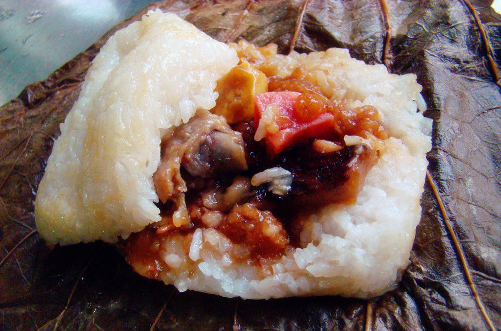

北京时间
湖南小吃糯米鸡的做法
糯米3500克，精盐40克，面粉1500克，芝麻油2500克(耗750克)，鲜猪肉500克，胡椒粉2.5克，酱油250克，姜末25克，味精2.5克，葱花100克。
糯米鸡的特色：
色泽金黄，形似圆形刺球，外脆内鲜嫩。
教您糯米鸡怎么做，如何做糯米鸡
1.将糯米用清水洗净，放入盆内加水浸泡，捞出冲洗干净，入笼蒸熟。猪肉洗净，切成黄豆大的丁。面粉放入盆内，加入精盐10克、清水调成面糊。
2.锅置旺火上，加芝麻油50克烧热，放入姜末煸炒，再放入猪肉丁炒至断生出油，加入精盐30克、酱油、葱花、胡椒粉、味精炒3分钟，炒匀盛入盆内，倒入熟糯米饭拌匀，搓成每个重约65克的糯米块，放在案板上。
3.锅置旺火上，加芝麻油烧至八成热，放人挂有面糊的糯米块，炸至糯米鸡呈金黄色时，捞出沥油即成。
糯米鸡的制作要领：
1.糯米要浸泡6小时，入笼蒸前要冲洗净酸水，蒸至熟烂为佳;
2.面糊稀稠要适中，太稀不易挂糊，太稠挂糊不匀;
3.油炸时油温要适当。
